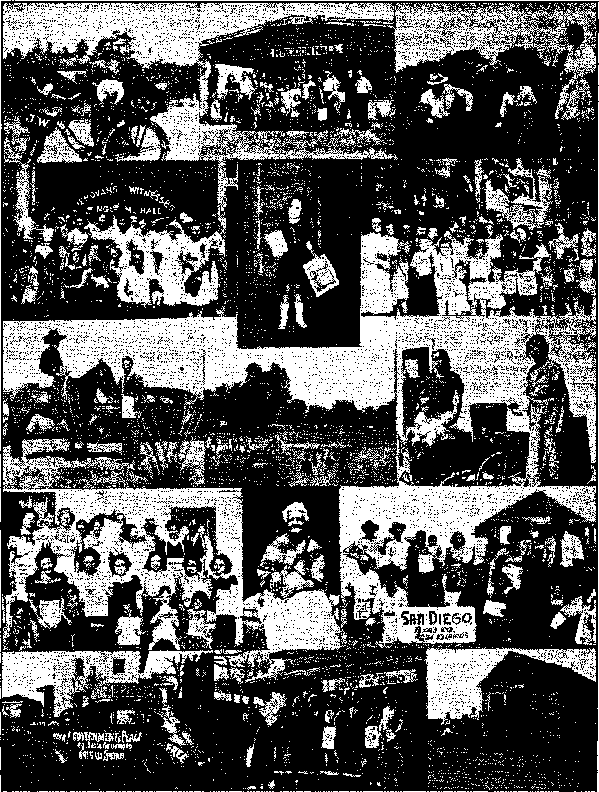
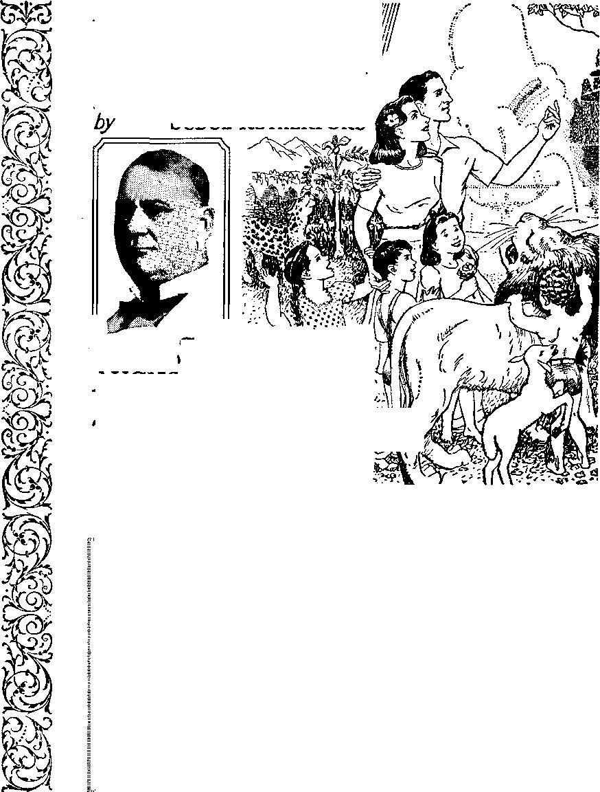

Contents
Ideal Site for a General Assembly
Jehovah’s witnesses in St. Louis
Australasia— Loading Cattle in Fiji
Counsel by J. F. Rutherford
Foreign Conspiracy Against America
Canada— Hitlerism; "Defence of Canada” 21
California—■ Monarch Butterflies
South Atlantic States— Can It Happen Here? 24
New Government
British Comment
The Church of Scotland Again ,
Published every other Wednesday by WATCHTOWER BIBLE AND TRACT SOCIETY, INC, 117 Adama St., Brooklyn, N. Y.. U. S. A.
Editor Clayton J. Wood worth
Business Manager Nathan H. Knorr
„ Five Cents a Copy
fl a year In the United States
(1.25 to Canada and all other countries
NOTICE TO SUBSCRIBERS
Remittances: For your own safety, remit by postal or express money order. When coin or currency is lost in the ordinary mails, there Is no redress. Remittances from countries other than those named below may be made to the Brooklyn office, but only by International postal money order.
Receipt of a new or renewal subscription will be acknowledged only when requested. Notice of Expiration Is sent with the journal one month before subscription expires. Please renew promptly to avoid loss of copies. Send change of address direct to us rather than to the post office. Your request should reach us at least two weeks before the date of Issue with which it is to take effect. Send your old as well as the new address. Copies will not be forwarded by the post office to your new address unless extra. postage Is provided by you.
Published also In Afrikaans, Bohemian, Danish, Dutch, Finnish, French, German, Greek, Hungarian, Japanese, Norwegian, Polish, Portuguese, Spanish, Swedish, Ukrainian; also special Australian edition in English,
OFFICES FOR OTHER COUNTRIES
England 34 Craven Terrace, London, W. 2
Canada 40 Irwin Avenue, Toronto 5, Ontario Australia 7 Beresford Road, Strathfield, N.S.W. South Africa 623 Boston House, Cape Town
Entered aa second-class matter at Brooklyn, N. Y., , under the Act of March 3, 1879.
Notanda
Prophecies of the Kingdom
♦ "After this manner therefore pray ye: Our Father which art in heaven, Hallowed be thy name. Thy kingdom come. Thy will be done in earth, as it is in heaven.” (Matthew 6:9,10) [Under the Kingdom, God’s will shall be perfectly done on earth.]
"A certain nobleman went into a far country, to receive for himself a kingdom, and to return.” (Luke 19:12) [The setting up of Jehovah’s Kingdom awaited the return to earth of Jehovah’s King, Christ Jesus.]
“The kingdom of God cometh not with observation.” (Luke 17:20) [When the heavenly Kingdom is in process of being set up, the unbeliever in God’s Word will not discern it.]
“The desire of all nations shall come.” (Haggai 2 : 7) [AU the honest-hearted in the earth—the Lord calls them His “sheep”—desire His Kingdom above all ' else.] ■ '
“In the dSys of these kings shall the \
God of heaven set up a kingdom which !
shall never be destroyed: and the'king- . t dom shall not be left to other people, but it shall break in pieces and consume all these kingdoms, and it shall stand for ) ever.” (Daniel 2:44) [AU parts of Satan’s kingdom must give way ^completely.] ’
"In his days shall the righteous flourish; and abundance of peace so long as the moon endureth.” (Psalm 72: 7) [The “everlasting” wars of Satan’s kingdom / will be followed by the everlasting peace of Jehovah’s Kingdom.]
“Of the increase of his government and peace there shall be no end.”—Isaiah 9: 7.
“And he shall; judge among the nations, and shall rebuke many people; and they shall beat their swords into plow- . shares, and their spears into pruning-hooks: nation shall not lift up sword against nation, neither shall they learn war any more.”—Isaiah 2: 4.
“And in His name shall the nations hope.”—Matthew 12:21, A.R.V.
Volume XXII Brooklyn, N, ¥._ Wednesday, August 6, 1941 Number 571
SAINT LOUIS now becomes the site of the most unique convention in human annals, and one which will exercise a great influence upon the lasting welfare of the people not alone of the convention city but also of the entire nation and beyond our national boundaries. The convention deserves watching, and especially attendance by every person of good-will who can get there.
Just why a Higher Providence determined that St. Louis should be made possible and chosen for this important event of 1.941 yet remains to be seen by what develops in the course of the convention to its grand climax on August 10, and by what follows in the wake thereof on the return of the conventioners to their homes throughout America and in foreign countries. Certainly it will play
Foreground shows The Arena, together with adjoining buildings to be used for cafeteria, overflow meetings and other convention arrangements. Note parking lots adjoining. Background shows Forest Park, second largest park in the United States.
a significant part in these stirring times, when the world is plainly in a strange transition period and the destiny of America and of all nations is being decided. Those who hope for the ultimate setting up of a righteous government with enduring peace and blessings for all order-loving persons are especially concerned and anxiously hoping against hope. Despite the present desperate world outlook their hope shall be realized in a manner far grander than their fondest dreams.
The tragic force of events today, together with the harsh din of mechanized warfare, tends to draw the universal attention of the distressed people of the nations to the great battle arena of the European and African continents and the Near East. If, however, they would turn their attention west to The Arena in this mid-continental city and listen in during these Convention days of August 6 to 10, they might hear the clear accents of the “still small voice”, telling of the only hope of all humankind. Scores of thousands, realizing the vital significance of this national convention, are streaming into the city by ail the various means of modern transportation and taking up a temporary residence to he in attendance from start to finish. It reminds one of the migrations of population of many nationalities to the same city in bygone decades.
Ideal Site for a General Assembly
■ As a convention city St. Louis is ideal, and far different conditions greet those who now come hither than attracted “The First Thirty”, as the original builders of St. Louis were called. Then the site of this chief city of the state of Missouri was but a howling wilderness where could be heard the crack of the adventurous ranger’s rifle and the fierce whoop of the tribe of Sioux Indians known as the Missouri. It was the exclusive privilege to trade in furs that prompted the first settlement of St. Louis, in 1764, when the territory yet belonged to France. On the basis of exploration and discovery France claimed the whole interior of the North American continent and attempted to occupy it. She built a line of forts from Quebec and Montreal, on the St. Lawrence, to New Orleans, at the mouth of the Mississippi river. Thus the English colonies on the Atlantic coast were hemmed in on the west by New France, even as defeated Catholic France is now being invited into collaboration with the dictatorial power of Europe in order to hem in the island fortress of Protestant Britain.
It was a cold wintry night, February 14, 1764, that “The First Thirty” under the lead of a French nobleman, Pierre LaClede Liguest, landed on the west bank of the muddy Mississippi, at the foot of what is now Walnut Street, there to lay the foundation of our convention city. That night they slept on the large flatbottomed water craft which they had poled and dragged along the frozen bank of the Mississippi some 60 miles from Fort de Chartres. The next day, on a site now bounded by Main and Second, Walnut and Market streets, LaClede began the building of what he spoke of as a “settlement which might become one of the finest cities of America”. He built the first house, employing Indian women and children in digging out the cellar and carrying the earth away in their blankets. LaClede drew the plan of the settlement and organized “The First Thirty”. The first settlers built their “houses of posts”, that is, by placing logs on end instead of horizontal with the ground, after the manner of “the Bostons”,-as they called the settlers to the east of the Allegheny mountains. Today, after 177 years of growth and reconstruction, St. Louis is a “city of brick”, a home-made city.
Religion and Jesuitism were associated with this commercial enterprise of St. Louis right from the start. During the first years of its history there were but
CONSOLATION
two Roman Catholic priests in the St. Louis territory, one of whom was a Jesuit. A small church built of upright logs was erected, and on June 24, 1770, was dedicated. In 1772 the Capuchin monks came, and one of them became the first resident priest of the city. Today the city has within its environs the Jesuit institution known as St. Louis University, the first university of the West, and including St. Francis Xavier’s College Church. In 1815 St Louis became a bishop’s diocese.
The fur trade proved successful and prospered and grew until St. Louis is now recognized as the greatest raw fur market in the world. The sales thereof each year amount to $20,000,000. During the city’s first century of existence the business district remained right where LaClede’s map had located it in the beginning. Down to the start of the great World War of 1941 the St. Louis business center had not moved the distance of a rifleshot from where this civil engineer envisioned as the proper place. Thus the original site of the city now forms a small portion of the business section of St. Louis.
“The Louisiana Purchase”
In these days of the early roaring forties St. Louis ranks as the eighth city in America, with a population of 813,748, which is quite a growth from “The First Thirty” within 177 years. When St. Louis and the rest of the vast territory included in /‘The Louisiana Purchase” was acquired by the United States, during-the presidency of Thomas Jefferson, this great democrat expressed the belief that a full settlement of the great Mississippi valley could not be accomplished in less than a thousand years. He did not foresee the invention of the steam locomotive. The railroads did it in less than a. tenth of the suggested millennium.
In 1800 the St. Louisang numbered but 1,400, being mostly French, with some Spaniards, but with a steadily increasing influx of Americans from the east of AUGUST 6, 1941
the Mississippi, especially after the Louisiana Purchase, in 1803. Seven years after the incorporation of the city in April, 1823, the United States census of 1830 gave the city 4,977 residents. Then came great distresses and revolutionary troubles in Europe. The Irish famine of 1846 prompted an abnormal emigration to the great western land of opportunity and plenty, and St. Louis absorbed many of these immigrants. Then followed shortly the great European revolutionary upheaval of 1848, which resulted in a development that amazed St. Louisans, ■when the head of the greatest religious organization in the world and who claims to occupy on earth the place of Almighty God was obliged to flee from the Vatican in disguise and in fear of his life and to take refuge at Gaeta, Italy, outside the Papal states. There he remained until the newly set-up Republic of Rome was overthrown by the intervention of the French armies, to whom Pius IX appealed, and thereafter he returned to his religious capital, in April, 1850. Germany was also affected by the great surge of revolution, and there resulted a great influx of Germans from their seething native land into America. Again St. Louis was a beneficiary thereof which took in a large proportion of persons of that blood, but today those of that blood strain in the city are practically all natives. Meantime also the Negro population was increasing.
Missouri Admitted to the Union
It was in February, 1821, that Missouri was admitted to the American Union as a slave state, this upon the basis of the so-called “Missouri Compromise”, which allowed Missouri to remain a slave state. To this day there still stands at the east door of the historic Old Courthouse in St. Louis the stone auction block on which these unfortunate blacks were sold. This famous old structure is also noted as the scene of the Dred Scott slave case, which shook the new nation to its very foundations. The
case eventually reached the United States Supreme Court, in 1855. Its decision, published in March, 1857, was essentially the same as the adverse decision of the Supreme Court of Missouri, which had been appealed from, to wit, that Dred Scott as a Negro was not a citizen of the country’within the intent of the Constitution, and therefore the Circuit Court had no jurisdiction and the suit for assault and battery upon Dred should be dismissed. This decision greatly inflamed popular wrath, and soon the entire question was decided by the Civil war of 1861-65, throughout which, be it said, St. Louis remained steadfastly loyal to the Union. One result of this bloody struggle, in which Missouri contributed thousands of warriors to both sides of the conflict, was the addition to the nation’s Bill of Rights of the Fourteenth Amendment, to wit, that “no State shall make or enforce any law which shall abridge the privileges or immunities of citizens of the United States, nor shall any State deprive any person of life, liberty, or property without due process of law, nor deny to any person within its jurisdiction the equal protection of the laws.”
The St. Louis Post-Dispatch believes in such protection of the rights of the underprivileged and of unpopular minorities. In 1940 a ease involving the same principles as the Dred Scott case came up before the Supreme Court of the United States, and again as in 1857 the 1 highest tribunal of the land evaded the issue and rendered an adverse decision against those suing for relief. This resulted in a great division of opinion throughout the nation, and in which many newspaper editors took the position of the present Chief Justice, Harlan Stone, who then as an associate justice dissented from the majority opinion. Among such was the editor of the Post-Dispatch, and next day under an article titled “A Terrible Decision” he said: “The peculiar thing about Jehovah’s witnesses is that they are forbidden by their religion to salute the flag. This does not mean that they are unpatriotic, that they do not love their country. It simply means that, as they read the Scriptures, to salute the flag is to violate the divine commandment stated in verses 3, 4, 5 of the Book of Exodus [chapter 20] forbidding the bowing down to a graven image ... We think this decision of the United States Supreme Court is dead wrong. We think its decision is a violation of American principle. We think it is a surrender to popular hysteria. If patriotism depends on such things as this —on violation of the fundamental right of religious freedom—then it becomes not a noble emotion of love for country, but something to be rammed down our throats by the law. We honor Justice Stone, who refused to lend himself to it.” This magnanimous editorial of the Post-Dispatch was, no doubt, potent for great good, as during the turbulent months that followed the Supreme Court decision, when mob rule broke out against Jehovah’s witnesses and swirled about in the states adjoining Missouri and even invaded the southern section of the state, the city of St. Louis maintained its poise and calm and refused to participate in such flagrant disrespect of law and order and the Bill of Rights. It is expected that, to its own immeasurable benefit, St. Louis and vicinity will accord the same fair and proper treatment throughout the five days of the assembly of Christians for worship there.
St. Louis Easy of Access 1
It is easy for conventioners from all parts of the nation to get to this queen city of the great Mississippi valley. St. Louis is the gateway for north and south travel as well as freight traffic. A feature is the Eads bridge across the great “Fish River” (as the Indian name “Mississippi” means), or “Father of Waters”. This bridge is said to accommodate more freight cars than any other in the world. The length of the bridge, including a tunnel at the St. Louis end, is 6,220 feet, and the span of the bridge is 55 feet above high water. River traffic is immense to and from New Orleans and intermediate points. AU the steam railroads use the same passenger terminal, which was first opened in 1894, when it was the largest railroad passenger terminal in the world. Its facilities were increased in 1904. All of the 28 railroads entering St. Louis have access to the terminal facilities. The modern Union Station at 18th to 20th streets on Market street is used by all lines, and nearly 300 passenger trains arrive and depart from this central depot daily.
Besides, St. Louis is the hub of a vast system of up-to-date and improved highways radiating in every direction. Some of the convention er s may even come by the air route, as the city is an important link in the country's network of transcontinental air lines, furnishing passenger and mail service in all directions. Transcontinental planes take off from and land at the Lambert-St. Louis Municipal airport, a $3,000,000 project, and the air traffic is tremendous. Then, too, there are the ponderous cross-country buses that arrive at and depart from the downtown Bus Depot. Within the city and county transportation is provided by streetcars and bus lines. A novel ticket system is in vogue, wffiereby on the payment of $1.25 the St. Louis Service Company issues to the passenger a ticket which can be used during an entire week on all bus and streetcar lines of the city as many times as the ticket holder desires to ride whither and wherever. There is also a ticket issued for 25c, which is good for one day. These tickets have an attractive face with an announcement of some event worked into the design, thus having great advertising value. At their own request the Service Company were provided with copy for the 7-day transportation ticket of August 3-9, and attractively announcing the chief features of the Theocratic Convention, to wit, “Hear Judge ■ Rutherford, Saturday, August 9, 3 p.m., on 'Comfort All That Mourn’—Sunday, AUGUST 6, 1941
August 10, 11 a.m., on 'Children of The King’, at The Arena-—Free - Welcome!” Thus for a full week many thousands of St. Louisans could have this ingenious ticket ad in hand as a constant reminder.
The “Show Me" State
St. Louis is situated in the foothills of the mountains which gave Missouri the name “Ozark State”. The city sit? is a succession of gentle ridges and depressions, each successive ridge toward the west rising higher. At the western city limits the elevation is 600 feet above the level of the Gulf of Mexico. Beyond that the ridges rise until the plateaus of the Ozarks attain altitudes of 1,000 feet. The site averages 100 feet above all flood waters. The metropolitan area, within a 40-mile circle from the city and of which St. Louis is the business and banking center, has a population of 1,246,000. It manufactures more than $200,000,000 worth of shoes each year. It holds first place in the output of American-made chemicals. It is the largest lumber market in America, and also the largest coffee distributing point in the United States, and, by no means to be omitted, it has the largest horse and mule market in the world. Who hasn’t heard of the Missouri mule from the '‘Show Me” state?
St. Louis is noted for its botanical gardens, its zoo, parks, and Municipal OpenAir Theater, seating 9,267. Its Washington University is one of the distinguished institutions of higher learning of the nation. General Grant, of Civil War fame, was a frequent visitor to the city, and the old U. S. Grant log cabin, built by Grant himself outside of St. Louis, draws many visitors. In striking contrast thereto St. Louis is a “city of brick”, and a city of homes, due to the great proportion of one-family houses; 23 percent of the population own their own homes. How that great pioneer, the apostle Paul, would therefore have enjoyed carrying on his Kingdom activities in present-day St. Louis! for, describing his Scriptural method of proclaiming the best news of
all time, he said to the Christians of the city of Ephesus: “I kept back nothing that was profitable unto you, but have shewed you, and have taught you publicly, and from house to house, testifying both to the Jews, and also to the Greeks, repentance toward God, and faith toward our Lord Jesus Christ.” (Acts 20:20,21) But what the apostle Paul cannot do today in St. Louis, Jehovah’s witnesses are doing in the same apostolic manner, and not a house or home in the great metropolitan area but has been visited and presented with the message of the same Theocratic Government that the apostle himself proclaimed for the comfort of all that mourn. Be it observed that this house-to-house missionary was the most hunted-down and mobbed and maltreated of all the apostles in the Sacred Record!
Jehovah’s witnesses in St. Louis
There are three active organized units of Jehovah’s witnesses in St. Louis, namely, a Northern Unit and a Southern Unit and also a Colored Unit, together comprising a group of several hundred. During the past year alone they have distributed more than a hundred thousand books and booklets, besides other hundreds of thousands of magazines and free tracts, all publishing the Theocratic message. Also, due to the city’s strategic location, the Watch Tower Bible & Tract Society, publisher for Jehovah’s witnesses, maintains a distribution depot in St. Louis for the service of the Middle West. As much as thirty tons of printed material for the supply of the witnesses passes through this depot in a month.
During the eventful Convention days of August 6-10, Jehovah’s witnesses are assembling at the mammoth institution, The Arena, 5700 Oakland Ave., opposite Forest Park, the second-largest public park in America and approaching Paradise in its arboreal and floral beauty. From all sections of the land and from foreign countries they are coming hith-
8 '
er, by all means of transportation, and the number expected should boost the number of inhabitants in St. Louis up to near the 900,000 mark temporarily. At The Arena space is provided for the assembly and accommodation of approximately 75,000 persons. If a greater number than that attend, they wdll be accommodated too; additional space has been arranged for. Notable among those in attendance is the high percentage of children, which serves to emphasize the theme for the public address at 11 a.m. Sunday, August 10, to wit, “Children of The King.” The people of St. Louis have graciously opened up their homes for the entertainment of these peaceful, lawabiding Christian visitors, a very different spirit from that of the municipal Chamber of Commerce, which refused to offer any welcome to them whatsoever. Nevertheless, they are coming anyway, and the people of good-will in St. Louis will receive the blessing and benefit, both financially and in the more lasting and higher values, the things of the spirit. Those w’ho have come, bringing their own home with them in the form of trailer or house-car, have erected a small transient city larger in population than when St. Louis was incorporated as a city (less than 4,977). Thus by their presence, in camp, in private home and in hotel, and by their varied activities in convention and on the streets and from house to house, it will be possible for St. Louis to get an intimate close-up of Jehovah’s witnesses, on a big scale, and get to know them better.
Not a “Cult” or "Sect"
But just who are Jehovah’s witnesses? By whom are they selected and organized to perform their duties and carry on their work? The claim that any man is the founder or organizer of Jehovah’s witnesses is blasphemy, for the obvious reason that it is the prerogative solely of Almighty God Jehovah himself to select and organize His own witnesses and no man has any authority whatso-CONSOLATION
ever to select or organize them. Jehovah’s witnesses could not be a "cult", practicing some system of religious belief, ceremonies and rites indulged in by an organized body of persons; and neither could they be a "sect", following some particular human leader in their belief and practice of some specific religion. The witnesses of Jehovah are made up of persons who are entirely devoted to Jehovah God and His Kingdom of righteousness, and who are faithful and diligent in carrying out His orders as commanded in His Word. They are selected or chosen by Almighty Jehovah God. No man could select them. (See 1 Peter 2:9,10.)
The Chief Witness of Jehovah God, and Head over all of Jehovah’s witnesses, is Christ Jesus, the Lord, Savior and King of The Theocracy. One of His official titles is “The Faithful and True Witness”. (Revelation 1:5 and 3:14) The first man who was selected as a witness of Jehovah God from amongst men was Abel, who received God’s approval and who for that reason was murdered by his brother Cain, a religionist. From the time of Abel onward Jehovah God continued to select His witnesses from amongst men, down till today. To them He says, in the words recorded at Isaiah 43:10-12: “Ye are my witnesses, saith Jehovah, that I am God,” As Christ Jesus, when on earth, continuously proclaimed the name and kingdom of Jehovah, so all His followers must proclaim the name and Theocratic Government of Jehovah in order that they may prove their integrity and faithful obedience toward Him. To aid them in doing so and to work to the best advantage that body of Christians have the Watch Tower Bible & Tract Society to act for them and in their behalf.
In many cities, towns and communities throughout the earth classes or companies of Jehovah’s witnesses are maintained and these regularly meet, many times during the week, to engage in careful and prayerful study of the Bible; and AUGUST 6, 1941
to do so they use the publications of the Watch Tower Bible & Tract Society in order to study the Scriptures in an orderly way and get a better understanding of the will of God concerning them. Such persons are real non-sectarian students of the Scriptures and, being unselfishly devoted to The Theocracy and guided by the spirit of the Lord, they learn the Scriptures and the meaning thereof.
“From House to House"
Each and every one of Jehovah’s witnesses, consecrated to do His will, and hence commissioned by Him, is commanded to preach God’s message of truth to all that will hear. Such is the means of bearing witness to the name and Kingdom of Jehovah. They are not witnesses for any human organization, but are witnesses for the Most High, the great Theo-crat. In obedience to His commandment they go from place to place and from house to house, calling upon the people and informing those who’will hear of the good news that the long-desired Kingdom of God is here and, after the nearing battle of Armageddon, will fill the earth with blessings for all persons of good-will. Unlike religious denominations, which meet in imposing edifices and perform certain formal ceremonies, Jehovah’s witnesses follow the example of Christ and His apostles and go to the people and talk with them. They take to the people books, booklets, magazines and other printed matter concerning the Sacred Scriptures, which enable the people to find in them the full and complete proof of this good news and that the Righteous Government is at hand. Thus the people are enabled to stay in their own homes and learn of God’s gracious provision for them and learn thereby to “worship him in spirit and in truth”. All this work is done without pecuniary profit to any person. Furthermore, persons who do engage in this witness work contribute their own money to carry on the "work. There is but one purpose in their lives, and that is to make known Jehovah’s kingdom and the blessings it will bring.
■St. Louisans of good-will are mindful of the motto of their State of Missouri, “Solus Populi Supremo Lex Esto,"' meaning, “The welfare of the people is the supreme law,” and for this reason they will receive Jehovah’s witnesses with appreciation. The name and Kingdom of Jehovah by Christ Jesus are of supreme importance, and that Government of Righteousness and Peace is the only government that brings the eternal welfare of the people. Likewise Jehovah’s witnesses are come to St. Louis in convention for the highest welfare of the people, not only the people of that city but all men of good-will everywhere, to whom the blessings of this Theocratic convention shall yet spread. All such are cordially invited to attend all the gatherings of the assembly at The Arena, and particularly the public addresses of the president of the Watch Tower Society, as widely advertised, “Comfort All That Mourn” and “Children oL The King”. These subjects bespeak the spirit and purpose of the convention. Learn of The Kingdom and rejoice and live!
Some of Finland’s Good Points
♦ The Finns seem to be willing to pay back the money they borrow without abusing their creditors; they do not invade other countries, but they defend themselves when invaded by giants, and do it in a way to make the whole world wonder. And when their farmer-president, Kyosti Kallio, old and ill, was laying down his burdens to his young and capable successor, they turned out en masse to bid him good-bye. The scene affected him too deeply to bear, and the account says simply that as he turned to wave good-bye to the people, with “Thanks for everything” upon his lips “he gasped, clutched at his heart, and fell dead in the arms of Field Marshal Mannerheim, his country’s liberator”.
When Viipuri Was Seized ,
♦ When Viipuri, Finland, was seized by the Russians inquiry was made if any wished fo remain. Two out of the 80,000 inhabitants stated they wished to do so, but when the time came the two could not be found. When the war was over every seventh person in Finland was homeless and 49 percent of the evacuated and homeless children were ill. In one place there was only one pair of boots between twenty people and numberless children had to stay indoors rolled up in blankets because they were without clothing.
Finland’s Plight
♦ Hemmed in on all sides and cut in two in the middle Finland can now be digested at leisure by the totalitarian crowd. The Finns abandoned 40,000 of their best farms rather than live under Stalin’s rule, and 460,000 men, women and children pulled out of the Bolshevist paradise to make their homes in a rockbound land crossed by the Arctic Circle.
Proud Even in Defeat
♦ Proud even in her honorable defeat Finland proffered payment of the $159,398 due on her debt to the United States on June 15,1940. Few believe that America will touch a cent of this blood money, but the gesture is magnificent and puts Finland in a position where she can get anything America is able to give.
Half Million Homeless Finns
♦ Finland notified the League of Nations that, as a result of the Russian invasion and the peace she was compelled to make with Stalin, she then had 550,000 homeless persons to look after, 55 percent of whom are children and 30 percent women. Another huge addition to the millions of refugees who have no place to go.
THE following shows the contrast between conditions in the American Aleutian Islands and the adjacent Ka-mandorsky Islands of the Soviet Union. The comparison is not altogether encouraging to the conceit of some who conclude that everything American is beyond comparison. Quotation from The Homan Forum:
During the summer of 1938 a Coast Guard cutter made a cruise with four scientists to the Aleutian Islands and to the Kaman dor sky Islands of the Soviet Union for the purpose of studying the origin and development of the Aleuts. These islands are east of Kamchatka Peninsula in Siberia and were discovered about 1741 by Vitus Bering under the support of Empress Anne of Russia. The original expedition was planned by Peter the Great.
From one of the scientists some data has been gathered which ■will present some comparison in the conditions of the Aleuts under the United States and those under the Russians. •
It should be remembered that the Kaman-dorsky Islands are one of the extreme outposts of the Soviet Union and as such will give some indication of the extent and of the type of policies that the Russians have developed in their handling of their more primitive groups.
The American Aleuts are reported as carrying considerable debt with trading stores, with occasional shortage of food, poor clothes, considerable addiction to liquor, with an unfortunate amount of venereal disease. This does not apply to all of the groups, but there is enough of these unfortunate conditions to leave open an opportunity for correction.
In the Russian Kamandorsky .Islands, with a population of several hundred of the Aleuts, all of the children of suitable age were in school and all the adults who could work had jobs. Many of them had small farms with vegetable plots. They raised cows, there was a government station for raising fox and sea otter, with a scientist detailed for guidance.
' No drunkenness was observed during the visit, no jail could be found, there was a community house and library available for the natives at the capital city and, as far as known, venereal disease was almost done away with.
The natives seemed to have plenty of clothes; calfskin boots were available at a cost of about $3.00 in American money. The natives and the quarters were models of cleanliness. ,
There was a nursery for the smallest children, a kindergarten and an elementary school. The library had books by Dostoyevsky and Tolstoy. The natives were fond of music, frequently enjoyed spontaneous singing, and played “Oh, Susanna" for their American visitors. Of the island government council of seven members, three were Aleuts. The director of industry was an Aleut.
What particularly impressed the visitors was the bearing and sentiment of self-respect and wholesome interest in a co-operative life that was everywhere evident. There seemed to be none of the fear present that would give rise to petty crime and hard dealing. "When the visitors attempted to buy food, the local inhabitants went out to gather some fifty splendid salmon from a local'stream and pass them to the ship’s company without cost. There was a cinema available, and in sports the American competitors were beaten both at volley ball and chess.
The sea otter station, the fox farm and the reindeer stations were thriving and gave good support to the local community.
At the community house lectures and talks were given. There happened to be a chart showing Nazi and Fascist troops coming over a Russian wall, with Russian soldiers mobilizing to stop them. This was evidently before the non-aggression pact with Germany. There were no churches known in the islands, but at the same time there was free intermarriage and no racial feeling. The islands were protected by a vast military force of one lieutenant and six troopers.—Quoted by “Rev.” Hewlett Johnson in The Soviet Power, pages 280-282.
In the Lead
♦ New Zealand has a place in the sun, not only figuratively speaking, but in reality. Each year the country averages two thousand and seventeen hours of sunshine, or six hours per day, which is comparable with southern Italy. Other good things about New Zealand are: the lowest death rate in the world, 8.48 per thousand, and the lowest infantile mortality rate in the world, 31.21 per thousand. Others again : it was the first British country to give manhood suffrage and female suffrage; has in Arthur’s Pass Tunnel (5| miles) the longest railway tunnel in the British Empire; has had universal penny postage since 1901, is Britain’s best per capita customer; supplies about one-third of the butter imported by Britain, over one-half of the cheese, more than one-half of her imported lamb and mutton, and nearly one-quarter of her imported wool. Last year it bought more manufactures from Britain than did any foreign country except the U.S.A. It is the world’s leading exporter of dairy produce, and of mutton and lamb, and second largest exporter of wool. New Zealand has been called “God’s Own Country”, but, like Australia, it bans the message of The Theocracy.
Loading Cattle in Fiji
♦ When loading cattle on the Fijian coast the steamer is anchored as near shore as possible, sometimes about 400 yards away. It is also “tethered” to a cocoanut palm on shore. A launch then tows a whaleboat halfway between the ship and shore, where it is anchored. A Fiji boy jumps over the side of the whaleboat and swims to shore with another rope. This is made fast to the horns of a bullock which has been separated from the rest in an improvised stockyard made of bamboo. The gate of the stockyard is opened and out rushes the bullock. The Fijian boys howl with delight.
The idea is to entice or force the bullock to get into deep water so that it can be pulled alongside the whale boat. The bullock snorts and bellows, probably rushes at one of the natives; he runs, everybody laughs, and all seem to be enjoying it except the bullock. As any slack is made on the rope, the boys on the whaleboat tighten up. This continues until the bullock is in deep water and swimming. The rest is easy. As he swims, so he is pulled alongside the whaleboat. Arriving there, a rope is fastened to the side of the boat and round the horns of the bullock so that he floats with the swell of the ocean, looking very uncomfortable and hoping no shark will come prowling around. Meanwhile his head is above water. There he floats while another line is taken ashore and the operation is repeated until there are three bullocks tied on either side of the whaleboat. The launch then tows the whaleboat out to the ship and the bullocks are hoisted aboard in canvas slings. It is simplicity itself—so long as nothing slips.—Australian Consolation.
[It isn’t the same world since Australian Consolation was stopped.—Ed.]
What? No Blackouts!
♦ When 477 British children landed in Australia they could not understand why there were no blackouts and no sandbags. They insisted on taking their gas masks ashore, but after they had eaten 300 oranges, 1,000 apples, 2,000 ice creams and 300 pounds of candy, with no ill effects, they concluded there are some good places in the world, after all.
Australia Wants Cannon Fodder
♦ Australia wants more cannon fodder, and hereafter each taxpayer will have a pension of 5 shillings weekly for each child under 16 after the first. Taxpayers having one child will receive a tax exemption of £150. Looks like an efficient plan.
CONSOLATION
‘They’ll Never Quit”
♦ London carried on. The people kept going. They put out the fires, cleaned up the debris. They patched up the public services, kept the highways open and the trains running. They helped each other. They took care of* the injured and succored the homeless. Women tore up their underclothing in the streets for bandages. They foughtfilisease. They buried their dead. They sent their children to the country, and the women fed each other’s men.
Above all, the people of London—and of other cities, too—kept cheerful. They kept their chins up and their thumbs up. They fought back. They took it. They fired guns to drown the noise of bombs. "When that did not work, they put plugs in their ears. They did not panic. They stayed put. They trusted Churchill and, if this war is ever won by anybody, no one will be entitled to a greater share of the credit than these front-line fighters in the Battle of Britain.
The British will never yield this city. They may yield a pile of ashes, a hole in the ground, but they will never surrender London. The “scorched earth” left behind by retreating Communists in China will look like an oasis compared to what the Nazis will find if they ever get to London. The English will fight on to the last man and the last stone. They’ll never quit,—Harry Klemmer, in the New York Post, April 16, 1941.
Giving and Getting
♦ The greatest joy in life is in giving, not in getting. Jehovah is the great Giver. The Devil is a getter, but gets nothing in the end. “Give, and it shall be given unto you.” “The liberal soul shall be made fat.” The Scriptures are full of such admonitions. A British woman had lost her husband and her son in the war. She knew what to do. She saw a couple of Canadian boys talking together, drove
AUGUST 6, 1941 up in her limousine, handed them a package of 150 £1 notes, and drove off before they could thank her. She will get pleasure out of the remembrance of that for as long as she draws the breath of life.
Still more precious is the gift of the truth to the good and honest heart, with the plain implication in God’s Word that it actually means salvation.
National Buildings Record
♦ Britain has organized a National Buildings Record and is now considering what to rebuild and what to tear away. Architects, historians and archeologists are getting the facts together, so that when the war is over there will be adequate information regarding important buildings of all kinds. But it will be the Lord, and not man, that will determine what shall be rebuilt after Armageddon is past. The buildings will be superlatively useful and beautiful, and they wull be all new. “Behold, T make all things new,” and the former things “shall not be remembered, nor come into mind”. —Revelation 21: 5; Isaiah 65:17.
“Stay Put” Rules
♦ The British Ministry of Information tells those who expect to be in areas that are invaded: Go to work, whether in shop, field or factory; do your shopping; send your children to school until you are told not to; do not try to go and live elsewhere; do not use the road for unnecessary journeys: they must be left free for troop movements, even a long way from the region where actual fighting is taking place.
One-Seventh of Shipping Sunk
♦ To start with Britain had 21,000,000 tons of merchant ships, and added 12,-000,0(X) more from the fleets of Norway, Denmark, Belgium, Netherlands and France. One-seventh of the lot was sunk in the first 18 months of the war.
‘ 13
Says a Buyers’ Guide
♦ Says a Buyers’ Guide: "A widely sold tooth paste contains 35 grams of potassium chlorate: 8 grams is a deadly dose”; many leading brands of catsup were found upon analysis to contain cockroaches and worms; many headache and pain remedies contain a drug which is charged with over a thousand deaths; a number of nationally advertised soft drinks contain a habit-forming drug.”
“An average of about 25 percent of what the consumer pays for clothing represents the manufacturer’s costs, the other 75 percent, or 300-percent increase over the manufacturing costs, going for advertising and selling expenses.”
The Bureau names 16 cosmetics the ingredients in which average, to cost 4c and the containers 7c, and which average to sell for $1.30; and then states that “almost every conceivable kind of claim is made for face creams, but most dermatologists agree that ordinary toilet soap makes the best possible cleanser for normal skins”.
As for tooth pastes: “Water and a tooth brush are all that are necessary, but if something more is desired, dissolve a quarter teaspoonful of salt or baking soda in a glass of warm water and use this solution on the brush.”
As for patent medicines : “Some weight-reducing remedies contain dinitrophenol, a deadly drug”; and, “One remedy was a capsule containing the head of a tapeworm.”
“Obviously an industrial and agricultural system geared to mass-produetion and absolutely dependent on mass-consumption cannot be expected to keep in balance when only 41 percent of the consumer’s purchasing power seeps through to buy its products; nor can consumers ever expect to realize the much higher living standards our modern production facilities make possible when 59 percent of the consumer’s dollar goes to the peddlers of goods.”
It makes one feel a little sick at one’s stomach to learn “that unripe fruits and vegetables are often gassed or dyed to give them a ripe color”; “that common foods sometimes contain lead and arsenic” ; “that old and mold-covered meat may be given a bath in a saltpeter or sodium sulphite solution and artificial coloring used to make it appear fresh and disguise its odor”; and “that pyrogallol, a poison used by photographers in developing films, is sometimes used in giving ripe olives a glossy black color”.
“Enriched Bread”
♦ After the valiant efforts to feed the American people plaster of Paris in their bread, and then propionic acid (Ward Baking Company Patent 2,154,449) so that no mold will form and breads ten days old could therefore be eaten, now cometh Bond Bread, with a half-page advertisement in the New York Times (costing a lot of money) and stating that it has “Delicious Bond Bread Now Enriched” and in the same paper a 14-line story from Washington which explains that before any concern may advertise that its bread is enriched, it must be made to contain among other things, nicotinic acid, derived from nicotine. The nicotine on the lips of a dirty old tobacco-smoking grandmother has been known to kill her little grandchild when she kissed her. Not wanting to be forward, but it seems as if a few of the good old-fashioned things like genuine wheat flour, real undoctored milk, etc., might be substituted for this chemical junk.
Anne the Queen Maker
♦ Friday magazine explains that the king without any job, i.e., Otto von Ilaps-burg, who has been running around the United States lecturing on why he should be put on the throne of Austria has not consolation
been traveling on any money he ever earned. Friday says that his queen mother, known to diplomats as “Meddlesome Zita”, never got very far with her queen business until she ran across Anne Morgan of the house of Morgan. After that all was lovely and one of her good friends (you can almost guess who it was) deposited $8,900,000 in American banks to be used as a fund for the restoration of the glories of the Hapsburgs which fell into decay since 1914.
Plan for One Big Steel Company
♦ A dispatch from Washington says: “High government officials today were studying the proposal of CIO president Philip Murray for conversion of the entire iron, steel and tin industry into one great production unit to assure adequate supplies for civilian and military needs.” It may come. Indeed, in Germany, Hitler runs every business, as Mussolini does in Italy.
The New Plastics
♦ The new plastics, made of coal tar and kindred products, are rapidly taking the place of real rubber and may eventually do away with almost all rubber imports. The annual value of American plastics thus produced is around $80,000,000.
Swans Froze to the Ice
♦ In the terrible winter of 1939-1940 two thousand white swans flew from the north of Sweden to Denmark, thinking to find better weather. They found worse, and many of them, landing on the island of Saltholm, southeast of Copenhagen, actually froze to the ice and had to be shot. Many were fed by airplane, and others were rescued and brought to the mainland. Indeed, in that dreadful winter in which men were lined up to slay one another by the million, efforts of humans to keep wild life existent in all parts of the Northern Hemisphere were very noticeable.
The Gonies Are Moving
♦ The gonies are moving from Midway Island, one of the airplane stops on the way from America to Asia. They do not like the trees which have been planted by Uncle Sam. When they try to fly they sometimes hit a tree and are injured, so it is necessary for these largest of all sea birds (Laysan albatross) to locate another desert island where they can mount into the skies without danger of being killed. Probably more albatross AUGUST 8, 1941 marriages have taken place at Midway Island than at any other place on the globe.
American Cuckoo Nicer than British
♦ The English cuckoo is an interloper that doesn’t bother to build its own nest. The American cuckoo, however, does set up housekeeping for itself and provide for its offspring. True, the nest is not exactly a finished work of art, but it is a nest. Its eggs are a pale greenish-blue. The American cuckoo is secretive, and even furtive, acting as if it had done or was about to do something it shouldn’t. But it gets after the tent caterpillar, and so performs a useful work.
“Patriotic Bird”
♦ Under the title “Patriotic Bird” the Los Angeles Times contains a picture three columns wide of an English sparrow waving in its beak a diminutive American flag probably made in Japan. There are a good many people in every land who have just as much sense as that bird and know just as much about what constitutes real patriotism. The whole thing is too asinine to even be ridiculous.
THE people want rest from strife and war. Howt will they get it? The word “sabbath” means “rest”. By establishing the sabbath day with the typical Israelites, whom He used to make prophetic pictures, God gave an implied promise of establishing a government of righteousness for the benefit of man and that that government would be one of peace and rest.
Among other provisions of the law given to the natural Jews, or Israelites, was the Fourth Commandment (Exodus 20; 8-11), which governed the day of rest. “Six days may work be done; but in the seventh is the sabbath of rest, holy to the Lord: ■whosoever doeth any work in the sabbath day, he shall surely be put to death. Wherefore the children of Israel shall keep the sabbath, to observe the sabbath throughout their generations, for a perpetual covenant. It is a sign between me and the children of Israel [not the non-Jews or Gentiles] for ever: for in six days the Lord made heaven and earth, and on the seventh day he rested, and was refreshed.” (Exodus 31:15-17) These scriptures show clearly an implied promise on the part of Jehovah God to establish a righteous government amongst men.
The sabbath day enjoined on the natural Jews by God’s law is not the Sunday now observed by the nations of “Christendom”. The Jewish sabbath day was the seventh day of the week, and corresponds with Saturday as shown on present-day calendars. Therefore the clergy of “Christendom” have the wrong day, even if they were interpreting the law properly. In the Second place, the clergy are not properly applying the law. The law never did apply to the non-Jews, but was part of Jehovah’s law covenant exclusively with the nation of Israel; and the first record of the observance by man of the sabbath, and the first command to man to observe the sabbath, is at Exodus 16:22-30, in connection with the work of gathering the miraculous manna for food in the wilderness. The statement concerning the creation, at Genesis 2:1-3, merely records the fact of God’s resting, but does not command man to keep the sabbath. When Christ Jesus came and died upon the tree on Calvary, he put an end to Jehovah’s law covenant with natural Israel by nailing it to the tree. As written at Colossians 2:14: “Blotting out the handwriting of ordinances that was against us, w’hich was contrary to us, and took it out of the way, nailing it to his cross [tree or stake].” Hence, at verses 16 and 17 follow’ing, the apostle refers to the Jewish sabbath law and says: “Let no man therefore judge you in meat, or in drink, or in respect of an holy day, or of the new moon, or of the sabbath days : which are a shadow of things to come; but the body [reality] is of Christ.”
With Christians every day is the same, and what is wrong to be done on one day is wrong to be done on any other day; likewise that which is proper to do on one day is proper on other days. Therefore to the Christians in Galatia the apostle wrote (Galatians 4:9,10,11, 21): “But now, after .that ye have known God, or rather are known of God, how turn ye again to the weak and beggarly elements, whereunto ye desire again to be in bondage? Ye observe days, and months, and times, and years. I am afraid of you, lest I have bestowed upon you labour in vain.” “Tell me, ye that desire to be under the law [covenant], do ye not hear the law?” If it be borne in mind that what happened to the Jews in connection with their law covenant was for the purpose of fore shadowing'things future to happen, and which things are
to be understood by those living at the end of the world, where we now are, then the whole matter becomes clear. When the apostle under inspiration refers to the Jewish law covenant and writes that “the law [has] a shadow of good things to come”, we may know that it had a significance far different from that given it by religious racketeers.-—Hebrews 10:1.
Jehovah’s immediate purpose in giving the Jews the sabbath law was to establish their belief or faith in Him, so that they would know that man’s relief can come only from God and would come in His due time, and that they must by faith wait for it. By keeping the sabbath the Jews would show their faith and confidence in God and would trust Him. By giving them the sabbath or rest period there is a clearly implied promise on God’s part to give rest and regeneration to those who shall exercise complete faith in Him and that this He would do in His own good time. At Hebrews 4:1-11 the apostle says that the purpose was to establish faith in God and that the Jews did not profit by the law concerning the sabbath because of their lack of faith or belief. ‘Tor -we which have .believed do enter into rest. . . . For he that is entered into his rest, he also hath ceased from his own works, as God did from his. Let us labour therefore to enter into that rest, lest any man fall after the same example of unbelief.”—Vss. 3,10, 11.
God’s law to the Jews governing the sabbath day typically referred to the coming of God’s kingdom under Christ. Observance of that law showed faith of the Jews in God and in His promised King that would bring rest and blessings to the people. Christ Jesus came and fulfilled the law because He was and is the King; therefore nothing could be gained by observing the typical sabbath law after the coming of Christ, nor does failure to observe it now give one the “mark of the beast”. The kingdom of God under Christ is now here, and within a short time it will destroy Satan’s oppressive rule at the battle of Armageddon AUGUST 6, 1941
and usher in everlasting rest for faithful men on earth.
The question is raised, If not literally observing the Fourth Commandment today, why then quote the Second Commandment concerning idolatry when refusing to “heil” men and to salute an emblem standing for the government and the laws of the nation? At Exodus 20:4, 5 Almighty God says concerning images and symbols: “Thou shalt not bow down thyself to them.” That commandment is not subject to interpretation by human creatures, be they judges of courts or religious “experts”. No doubt is left in the mind as to what is the meaning of those words, because God himself has given the plain interpretation thereof.—See Daniel chapters 3 and 6; also Esther chapters 3, 4, 5.
God provides the gift of life to all men who believe on the Lord Jesus Christ as the Savior and who then covenant to be obedient to the laws of God and hence obedient to Christ Jesus. That which was written in the law against idolatry and religion applies specifically to all spiritual Israelites, or Christians who follow Christ Jesus. Upon this point there is not a possibility of doubt, as it is written to the Christians by the apostle, at 1 Corinthians 10: 7,11,12,14: “Neither be ye idolaters, as were some of them; as it is written, The people sat down to eat and drink, and rose up to play. Now all these things happened unto them [natural Israelites] for ensamples: and they are written for our admonition, upon whom the ends of the world are come. Wherefore let him that thinketh he standeth take heed lest he fall. Wherefore, my dearly beloved, flee from idolatry.”
“And what agreement hath the temple of God with idols?” (2 Corinthians 6:16) “Ye turned to God from idols to serve the living and true God.” (1 Thessalonians 1:9) “This is the true God, and eternal life. Little children, keep yourselves from idols.” (1 John 5:20,21) These texts are in harmony with the Second Commandment at Exodus 20.
Facsimile pages from the valuable work by Prof.
Samuel F. B. Morse, Foreign Conspiracy Against the 00 Liberties of the United States. Although published a good many years ago, by the Van Nostrand publishing house, of New York, the work is as significant today as when written. Professor Morse warned President Lincoln of his impending assassination by tools of the Jesuits, and wrote an introduction to the book Confessions of a French Catholic Priest, also published by the Van Nostrands, and reviewed in Consolation No. 561.
50 vuronc in nn nwarua comma
DCtFOTUM 1MHUENT IK POFUT.
FOREIGN CONSPIRACY
AOAJXrrTMt LIBERTIES OP THE UNITED STATES.
CHAPTER I,
The first impfcitbiii nr the itnprobnbtikr of foreirti crrnKpiracycwi-aide red—Pre teni ptilhicMl cundhhai of Europe uwnr* an enterprise against cur In m It nt tai*.— The war of opiiriona commenced—Ues-pcliaoi agunnt Liberty—TheVicUajtudca of thin war—The official declaration of the dcapailc party against nJJ liberty—Necessity to LheTdmnph of despot ism, that Aiiipricvi liberty ahoold be iteairuy-ed—The kind 0f aH■ ck Jfton ij5 mQfit flk».dy to Ba adopted fh 1 m (he ml lire of the co ntesl — Picric u lar rea»ns wht our buri turion* are Quauxloii* to the European —H** the iitirk com
menced? Yea! by Ausiria— rhrnujh a Society called ihc 6-7.
Ostensibly religious in his designs.
Does this heading seem singular? What, it wilt be said, is it at alt probable that any nation, or combination of nations, can entertain designs against us, a people so peaceable, and at the same time so distant? Knowing the daily increasing resources of this country in all the mearts of defence against foreign aggression, how absurd in the nations abroad to dream of a conquest on this soil! Let me, nevertheless, aqk attention, while 1 humbly offer rny reasons for believing that a conspiracy exists, that its-plans are already in operation, and that we are attacked in a vulnerable quarter, which cannot be defended by our ships, our forts, or our armies.
Who among us is not aware that a mighty Struggle of opinion is in our days agitating all the nations of Europe; that there is a war these remarks with the purely religious character of the tenets of the Roman Catholic sect They are not in discussion. If any wish to resolve their doubts in the religious controversy, the acute pens of the polemic writers of the day will furnish them abundant means of deciding for themselves. But every religious sect has certain principles of government growing out of its particular religious belief, and which will be found to agree or disagree with the principles of any given form of civil government.* It is my design, therefore, briefly to consider some of the antagonist principles of the government of Austria and of the United States, and compare them with the principles of government of the Catholic and Protestant sects. By this method we shall be able to judge of their bearing on the permanency of our present civil institutions.
Let us first present to view the fundamental principle of government, that principle which, according to its agreement with one or the other of the two opposite opinions that divide the world, decides entirely the character of the government in every part of the body politic. jFYom whom is authority to govern derived? Austria and the United States will agree in answering—/rom God. The opposition of opinion occurs in the answers to the next question. To wAom on earth is this authority delegated ? Austria answers, To the Emperor, who is the source of all authority—“ I, the Emperor, do ordain,” &c. The United States
• flee Note B. answers, To the People, tn whom resides the sovereign power—“ We, the People, do ordain, establish, grant,” ic. In one principle is recognised the necessity of the servitude of the people, the absolute dependance of the subject, unqualified submission to the commands of the rulers without question or examination. The Euler is Master, the People are Slaves. In the other is recognised the supremacy of the people, the equality of rights and powers of the citizen, submission alone to laws emanating from themselves; the Ruler is a public servant, receiving wages from the people to perform services agreeable to their pleasure ; amenable in all things to them, and holding office at their will. The Euler is Servant, the People are Master. The fact and important nature of the difference in these antagonist doctrines, leading, as is perceived, to diametrically opposite results, are all that is needful to slate in order to proceed at once to the inquiry, Which position does the Catholic sect and the Protestant sects severally favor? I The JJone. the supreme Head of the Catholic church, claims to be the “ Vicegerent of God,” “ supreme over all mortals “over all Emperors, Kings, Princes, Potentates, and People;” 11 King of kings and Lord of lords.” He styles himself, “the divinely appointed dispenser of spiritual and temporal punishments •" “ armed with power to depose Emperors and Kings, and absolve subjects from their oath of allegiance“ from him lies no appeal“ be is responsible to no one on earth“ he is judged of no one but
AUGUST 6. 1941
These pages are part of a total of 27 taken from Prof, Morse’s book and being run serially in current issues of Consolation magazine. They are all of amazing significance at this time. The pages here published give part of the extracts contained in the article “Foreign Conspiracy Against the Liberties of the United States”, appearing in No. 568 of Consolation. See- also the intervening and succeeding issues for facts which account for the spread of the totalitarian abomination of desolation.
K2 iwsct rutmcji nuxartst or rornr.
God.” But not to go back to former ages to prove I he feet of the Pope's claiming divine right, let the present Pontiff Gregory XVI. testily. He claims, and attempts the exercise of this plenitude of power, and asserts his divine right. The document 1 quote is fresh from the Vatican, scarce four months old, a document in which the Pope interferes directly in the political affairs of Portugal against Don Pedro. "How can there be unity in the body,” says the Pope, “ when the members are not united to the head, and do not obey it 1 And how can this union and obedience be maintained in a country where they drive from their sees the bishops, legitimately instituted by Him to whom it- appertains to assign pastors to all the vacant churches, because the divine HicitT grants to Him alone the primacy of jurisdiction and the plenitude of power.'’ The Catholic catechism now taught by Catholic priests to the Poles in ail the schools of Poland, and published by special order at Wdua, 1832, is very conclusive of the character of Catholic doctrine. The following questions and answers are propounded: j
“ Quest. I. How is the authority of the Emperor to be considered in reference to the spirit of Christianity? Ans. As proceeding immediately from God.
“ Quest 2. How is this substantiated by the nature of things? Ans. It is by the will of God that men live in society; hence the various relations which constitute society, which
ROBUH CJTSOUX ES
for its more complete security is divided into parts called nations; the government of which is intrusted to a Prince, King, or Emperor, or in other words, to a supreme ruler; we see, then, that as man exists in conformity to the will of God, society emanates from the same divine wilt, and more especially the supreme power and authority of our lord and master, the Otar._______
“ Quest. 3. What duties does religion teach us, the humble subjects of his Majesty the Emperor of Russia, to practise towards him? Ans. Worship, obedience, fidelity, the payment of taxes, service, love and prayer, the whole being comprised in the words worship and fidelity.
“ Quest 4. Wherein does this worship consist, and how should it be manifested ? Ans. By the most unqualified reverence in words, gestures, demeanor, thoughts, and actions.
“ Quest. 5. What kina of obedience do we owe him? Ans. An entire, passive, and utt bounded obedience in every point of view. —i
“ Quest, ti. in what consists the fidelity we owe to the Emperor? Ans. In executing his commands most rigorously, without examination, in performing the duties he requires from us, and in doing every thing willingly without murmuring.
“ Quest. 8. Is the service of hie Majesty the Emperor obligatory on us? Ans. Absolutely so; we should, if required, sacrifice ourselves in compliance with his will, both in a civil and military capacity, mid in whatever manner be deems expedient, f -
M bvuiik ciTEcmiM.
“ Quest. 9. What benevolent sentiments and love ore due to the Emperor ? Ans. We should manifest otir good will and affection, according to our station, in endeavoring to promote the prosperity of our native land, Russia, (not Poland,) as well as that of the Emperor, our father, and of his august family. • • •
“ Quest. 13. Does religion forbid us to rebel, and overthrow the government of the Emperor? Ans. We are interdicted from so doing, at all times, and under any circumstances.
“Quest. 14. Independently of the worship we owe to the Emperor, are )ve called upon to respect the public authorities emanating from him? Ans. Yes; because they emanate from him, represent him, and act as his substitute, so that the Emperor is everywhere.
“ Quest. 15. What motives have we Io fulfil the duties above enumerated ? Ans, The motives are two-lb Id—some natural, others revealed.
, “ Quest. 16. What are the natural ntotives? Ans. Besides the motives adduced, there are the following: The Emperor, being the head of the nation, the father of all his subjects who constitute one and the same country, is thereby alone worthy of reverence, gratitude, and obedience ; for both public welfare and individual security depend on submissiveness to his commands,
“ Quest. 17. What are the supernatural revealed motives for this worship ? Ans. The supernatural revealed motives are, that the Emperor is the vicegerent and minister of God
Flying Blind in Bad Weather '
♦ Flying blind in bad weather, a $135,000 Transcontinental and Western airliner struck a tall maple tree on the edge of the airport at St. Louis and in no time plowed through a row of trees, smashed two telephone poles, severed 40 telephone and electric transmission lines and killed the chief pilot and another man, who had boarded the craft less than two hours previously. A tree to an aviator is like a rock to a mariner. To hit it means destruction and death.
Painting the Ice
♦ Painting the ice of the Kara sea red for a distance of 60 miles east and west, and green for a distance of 15 miles north and south, an aviator of the Soviet has laid the foundation for more critical studies of currents. Other aviators will fly over the red and green lines from time to time and bring reports of their location and conditions and thus additions will be made to the great store of information on conditions in the Arctic which the Soviet is compiling.
Getting Rid of the Fog
♦ Fog, sometimes caused by warm air passing over a cold surface, has been dissipated at some airports by heating the runways. An experiment, partially successful, was made of spraying sulphur chloride into the fog. By this means an area 150 feet wide, 30 feet high and 1,500 feet long was cleared; but it took, 85 gallons a minute to do it, so it looks impractical. .
Flights from New York
♦ New York is not the largest airport in the world, but it is the busiest. There are now 250 flights per day, 17 of them being clear across the continent to Los Angeles and San Francisco. There are 36 flights per day to Chicago, and 39 to Washington.
20
No More Ice on Propellers
♦ There is no longer any danger of ice forming on airplane propellers. Boots are placed on the propellers, pulsating by compressed air: the ice is cracked on the surface and the windstream strips it off. The device has been used on airplane wings for years, and it works.
Heretofore ice might form in an area of less than a mile in diameter, slowing down the speed, upsetting balance and tending to make the plane unmanageable.
Italy to Brazil
♦ Before the war both the Germans and the French maintained airplane services to South America via Dakar, Senegal, Africa, but the war stopped both lines. However, the Italians still maintain irregular service. Their route is via Seville, Spain, Rio de Oro, Africa, and the Cape Verde Islands. It is only 1,620 miles from Dakar, Africa, to Natal, Brazil.
Antelopes Fear the Planes
♦ The antelopes of West Texas fear the airplanes so much that herds may be guided by them when the planes are as high as 500 feet overhead. The discovery of this fact by the Texas Game Department caused 22 horsemen to lose their jobs, their places being taken by four aviators. '
Bombers Run into Money
♦ Present calculations are that two-motor bombers are to cost about $200,000 each, and four-motor bombers twice that considerable amount. About forty percent of the parts are to be made in motorear factories.
When the Wheels Lock
♦ When the wheels lock, aviators are forced to look for water to land in, with a fair chance of nothing worse than wet feet.
consolation
Hitlerism in Canada
♦ First, the Minister, on the advice of the police, orders an internment. Next, the right of writ of habeas corpus is abolished. Next, the courts cannot interfere.
Next, if they do interfere another administrative officer, the Director of Internment Operations, has power to detain in spite of the courts.
Lastly, the review committee, consisting of one man, functions under regulations which make it impossible for the accused man to put up an adequate defense and have a proper hearing; and even if the committee decides that an internee should be released, the Minister can still refuse to follow its advice. In shorty all power from start to finish is vested in the Minister, his police department and his legal advisers.
Surely this is the antithesis of British and Canadian democracy.—M. J, Coldwell, in a debate in the Canadian House of Commons.
The “Defence of Canada Regulations”
♦ When the Defence of Canada Regulations were passed they were kept absolutely secret. They were reported to the government, and the government, under the statute which enables them to call the civil servants into this conference, held the regulations until the outbreak of war.
Now you would think that if a rule of conduct was imposed upon the citizen, that rule of conduct would be at least revealed to him. You may remember I told you once before that the disposition and spirit of the Padlock Act, sooner or later, would spawn all over the statutes of Canada. Now listen to this:
The minister of justice, if satisfied that, with a view to preventing any particular person from acting in any manner prejudicial to the public safety, or the safety of the state, it is necessary to do so, may notwithstanding any of these regulations, make an order directing that that person be detained in such place and under such conditions as the minister of justice may, from time to time, determine, and any person shall, while detained by virtue of an order made under this paragraph, be deemed to be in legal custody.
We whose proud boast it was that no free man could be imprisoned or put to death or dispossessed or exiled or otherwise destroyed without formal trial by a judge and judgment of his peers I We now have everybody in Canada under jeopardy of slander, first; satisfaction of the minister of justice, next; imprisonment after that, and an inquisitorial proceeding into all your past to make the chapter complete!
Now, my friends, this is the closest approximation that a British-bred country has ever gone to the very thing that tore down the French state and brought about the French Revolution I—R. L. Calder, in an address in Toronto.
[As the foregoing implies, but does not state, Canada is at this moment squirming desperately in the grasp of its pope, Cardinal Villeneuve, and his stooge, Ernest Lapointe, alleged “Minister of Justice and Attorney General of Canada”. The real ruler of Canada is Villeneuve. For interesting information on this point see the next issue of Consolation, under the general title “Fate of Canada”.,-Fd.]
Canada-Built Trucks in Egypt
♦ There is a good deal of satisfaction in Canada over the fact that the British drive in northern Egypt and Libya was made in trucks designed and. built in Canada. These light trucks were accepted by the British early in the war as best suited for troop and supply transport.
Talk About Snow -
♦ When the winter of 1940-41 was only half over there was a snowfall of 16 feet in Glacier National Park, British Columbia, with February, March and April still to be heard from.
Went Back on Their Protectors
♦ Formore than fifty years around a mil* lion monarch butterflies have arrived at four o’clock at Pacific Grove, California, on an October afternoon, have draped themselves on nine moss-hung Monterey pines, and have returned to the British Yukon on March 15, following. Their visit was so much appreciated that the California city provided $500 fine and six months in jail for anybody that molested one of them, and there^was an annual butterfly pageant on November 11, The pageant was without butterflies in 1939. For reasons unknown they landed in a valley only a few miles away. Maybe they did not like to be coddled.
Partiality in Los Angeles
♦ A young man from an office was sent out to post notices on several properties on which mortgage foreclosure proceedings have been started. There were- several homes in the same neighborhood to be posted. After finishing the job he was about to enter his car to return when a little chap who had been watching with much curiosity came running and shouted, “Hey, mister, you missed our house. Aren’t you going to put one of those papers on our house?” Happy childhood! How little it knows of what it sees!
California’s Best Citizens
♦ The San Pedro News Pilot claims that the Japanese are the best citizens of California. They have the lowest crime rate, the best credit rate, no relief eases at public expense, and the highest voting turnout at election time. .
Redwood Smoked Meats
♦ It has been discovered that smoked meats have a very superior flavor when the smoke is obtained by burning chips or sawdust from the giant Sequoia trees. This might be of some interest to California readers.
23 Minutes to Make a House -
♦ In California, where everybody lives out of doors and the only use for houses is for a place to sleep, a contractor distinguished himself by setting up a three-room and bath unit of 500 square feet in 23 minutes. The structure is made of concrete slabs composed largely of pumice. The slabs are lifted in place by a truck crane, and welders seal up the partitions and corners. This form of concrete is very light. Nails can be driven into it and it can be sawed without dulling the saw.
Largest Orange Crop
♦ The current orange crop is the largest of record, the excess being in California, wherein are principally located the great dumps, sprayed with oil, which cannot be marketed without reducing the price. California had a wonderful lemon crop also, and probably it will be ‘necessary’ to destroy millions of lemons too. Anyway, it was good of the Creator to supply the oranges and lemons. Wasn’t it?
The Tree of El Capitan
♦ Out of a fissure in the granite rock of El Capitan, Yosemite National Park, California,. grows an 80*foot tree that cannot be reached, as it is 1,157 feet above the valley floor. The tree feeds almost entirely on the nitrogen in the air, with what little dust blows into the crevice in which it first started to make a name for itself.
The Death Valley Scotty Humbug
♦ Some readers will remember when the alleged mine owner, Death Valley Scotty, made his spectacular run from Los Angeles to New York in 57 hours 54 minutes. Now it comes out that Scotty never had a gold mine, never had any money to speak of, and that the humbug was all paid for by a Chicago insurance broker.
Hard Lot of the Chinese
♦ I speak of the peasants of China, for long oppressed by governments, by the rich, by the intelligentsia. Seventy-five per cent of these peasants are illiterate. Taxes, collected sometimes as much as fifty years in advance, have kept them in dire poverty. Opium has been forced upon them that officials might collect revenue. Flood and famine and civil war have been allowed to kill them off generation after generation, nor have "they been relieved in any way, their more fortunate fellow countrymen taking the callous view that the deaths of thousands of peasants from time to time relieves overpopulation. Yet these peasants are China’s strongest resistance today to her enemy.—Pearl S. Buck, in Asia magazine, March, 1941.
“Rip Tide in China”
♦ Under this engaging-title Edgar Snow, in Asia magazine, sees China awakening from 'her sleep, peasants and even children are making fun of the idols, putting Hitler mustaches on them and marking with chalk, “Down with Japan.” After three years of war with the most warlike nation of earth, China still stands while Czechoslovakia/Albania, Poland, Norway, Holland, Belgium and France have passed. China has no traitor to match Leopold of Belgium grid no umbrella statesman has brought about a Munich peace. Confucianism is passing away.
Students to Help Feed Themselves
♦ The Free China Government issued instructions that hereafter, since students must eat, -whether they have any means or not, the students of Free China must spend three hours per week at vegetable ‘gardening or the raising of chickens, pigs, cows, goats or fish. It seems like a sensible rule. Every man should know something of how to care for things which he must eat to live.
American Dealers in China
♦ American dealers in China find that they are being kept from free use of their own properties in Japanese-controlled sections; they find that their customers have been impoverished; they find Japanese traders everywhere behind the battle lines ; they find pressure to turn their companies over to Japanese companies, and they can see a condition approaching like that in force and effect in Korea and Manchupa, where, after a little, the only trading will be in the hands of the conquerors and the “open door” in China will be a nominal reality and an actual nonentity.
Food Riots in China
♦ It is hard enough for the poor of China to exist at any time, but with the war raging on all fronts, the crop failure in Japan and the huge quantities of Chinese food being shipped out of the country, food riots broke out and more are sure to follow. In the bitterest weather, last -winter, more than 200 Chinese, starved and frozen to death, were found in the environs of Shanghai every day. In North China a sack of flour now costs $20 as against $3.60 before the war, with rice and other foods risen in proportion.
The Reason for the Whistle
♦ The reason why Chinese arrows of old and German bombs of the present are fitted -with whistles is to make them seem more dangerous and aid in breaking down morale. The Chinese whistling arrows were used only to frighten people off the streets when the emperor rode by.
The Sorrows of 50,000,000 •
♦ It is estimated that the number of Chinese driven from their homes to distant parts of China is about 40,000,000 and that another 10,000,000 or thereabout died of disease and privation of the undeclared war now being carried on.
Can It Happen Here?
♦ In the old school reader was the story of the hero William Tell, who refused to how to the cap of the tyrant Gesler, when that tyrant had placed his cap on a pole and ordered the natives to make their bow to it.
For refusing to bow to this cap Tell was arrested. For the stand he took in resisting tyranny, Tell has been lauded as a hero by liberty-lovi ng people all over the world.
In America children are being dismissed from high school because they refuse to salute the American flhg.
We think the flag has lost something when people have to be compelled to salute it.
When one is compelled to salute the flag, then it becomes an emblem of tyranny. It then becomes like unto the German swastika.
The flag is worthy to be honored, but there is still One who is mightier than the flag. If He were given the honor due Him, we would scarcely need a flag at all.—The Reedy (W. Va.) News.
May No Longer Appeal to the King
♦ In the year 1929 eminent lawyers in the District of Columbia overhauled the code of laws governing the District and included therein a provision that anybody who desired to do so might appeal from the decisions of the judges to the king of England. The phraseology had not been changed since before the Revolution, and they did not change it even then. Congress has now solemnly passed a law that such appeals are no longer necessary.
Use for Churches
♦ South Carolina has found a use for churches. Whisky was found on three church premises—three barrels at one place. The Lord never asked anybody to build a church or to attend one.
Un-American Patriotism
♦ As for the American Legion, the less said about that bunch who are trying to ram their brand of patriotism down everybody's throat, the better for all concerned. They meddle into everything and with everybody, and most people are sick, tired and fed up with them and their doings. Did you ever attend one of their conventions? If not, you should attend one as I did in Fayetteville, N. C., several years ago, and that one was enough. I was in the army in 1918, and suppose 1 am eligible for membership in the Legion, but not as long as I am conscious. —Sam G. Johnson, in the Greensboro (N. C.) Daily News.
All They Got
♦ At Wilson, North Carolina, three colored tenant farmers cut down a dead pine to turn it into firewood. They got the firewood. In the top of the tree they found a nest of squirrels; that too was theirs. Under the squirrel, nest they found a nest of three raccoons; they got one of them. Under the coons’ nest they found two beehives containing about 100 pounds of pure honey. That also was theirs. Then they started to cut up the tree and out jumped a plump ’possum, and they got that too. The Associated Press is sponsor for the story, and possibly it is true.
Capitol Roof Did Not Fall
♦ For years there has been danger that the roof of the capitol might fall in. But the necessary repairs have been made, and it is all safe now unless the “New Order” bombs it from above or some of the same gang blows it up from beneath. The way in which the facts came out was that the repair job was done on Saturdays and Sundays and the overtime wages paid the skilled iron workers on that occasion were something to talk about. Their regular pay is $2 an hour.

The Proscription in Australia
♦ The Times Sydney correspondent reports that the Australian Government has declared the sect known as Jehovah’s witnesses an illegal organization. We have no right, of course, to instruct the Australian Government or people as to their duty in regard to any aspect of their magnificent war effort. (For one reason, we do not know to what extent Jehovah’s witnesses in Australia can rightly be accused of subversive activities). We have a right, however, to express the hope that there will be no similar proscriptions in this country. It is true that a good many of our conscientious objectors have avowed themselves members of Jehovah’s witnesses; and it would appear that the refusal of military service is one of the tenets of this body. But there is a difference between dealing with individuals and proscribing a whole religious body, however mistaken its notions may appear to be. Freedom of religious speculation and organization is an important element in the British tradition of liberty; and that tradition is one of the chief things for which we are fighting.—The (London) Christian World.
Jury Trial at Camden
♦ At Camden, New Jersey, one of Jehovah’s witnesses asked for and secured a jury trial, the judge of the Police Court acting as judge, prosecutor and counsel for the defense. He made a good job of it, too. At the right time he instructed the witness to make a motion to dismiss the complaint, and when it was done he instructed the jury to find a verdict of not guilty. The jury did as instructed and the judge said, “Not guilty.” ’Rah!
Gobitas Persecutor Dead
♦ Charles E. Roudabush, Minersville, Pa., school superintendent, is dead from a stroke of apoplexy. This man was responsible for the persecution of the children of Walter and Ruth Gobitas, the details of which persecution are to be found in The Golden Age of May 19, 1937. The bitter spirit of persecution manifested toward little children because of conscientious refusal to salute a flag was carried from Minersville to Philadelphia by Mr. Roudabush and the Minersville Board of Education and from there, despite Judge Maris’ vigorous denunciation of such persecution, the ease was carried further by Roudabush and the school board to the United States Supreme Court, which, with the exception of the present chief justice, H. F. Stone, unfortunately decided, substantially in Roudabush’s favor, that school boards may, not must, compel school children to salute flags.
An Apology in South Africa
♦ The East London, South Africa, Daily Dispatch published an attack upon Judge J. F. Rutherford and Jehovah’s witnesses, and when, in due course, the legal fraternity in their town offered to bring suit unless an apology was forthcoming, the Dispatch published an apology, expressed regret for their error, and as neither Judge Rutherford nor Jehovah’s witnesses desire to benefit financially, the apology and retraction were accepted and the charges were dropped.
Conspiracy on the Face of It
♦ The Lamp, Roman Catholic paper published at Peekskill, N. Y., made the slip of stating that a new ordinance passed by Oklahoma City is aimed particularly at Jehovah’s witnesses, “and is believed to be the first attempt of any city to enact legislation affecting that sect.” The Oklahoma conspiracy did not succeed. The U. S. Circuit Court of Appeals, in a decision, June 9,1941, makes that outcome plainly evident.
Little Flocks and Big Flocks
♦ Judge Rutherford says, in effect, that Jehovah’s witnesses are a small company of Christian men and women. He thus identifies them with Jesus’ expression of a little flock, to whom it would be the Father’s good pleasure to give the Kingdom. The newspapers give considerable space of late to this little flock. They also note certain other flocks, as the Roman Catholic flock of 398,277,000, the Confu-cianist or Taoist sect of 393,000,000, the Mohammedan sect of 296,177,000, the Hindu sect of 252,462,000, the Protestant sects of 201,868,000, the Greek Orthodox sect of 161,305,000, and the Buddhist sect of 118,199,000. Which one of these groups do you think will inherit the Kingdom? Which one is most persecuted?
The Lafourche Sheriff Did Not Know
♦ The Lafourche, Louisiana, sheriff thought he could stop one of Jehovah’s witnesses by seizing his books and automobile and ordering them sold because the witness preached the gospel by leaving books for contributions. It worked all right in the lower courts, but ran into a snag in the Supreme Court of the State. The judge rendering the final decision explained to the sheriff and the lower courts that preaching the gospel by the use of books is not peddling merchandise. The sheriff went to all his trouble for nothing and had to pay the expenses in the end.
Too Soon and Too Loud
♦ In an article nearly a column long attacking Jehovah’s witnesses, B. L. Spann, in the Baton Rouge (La.) State-Times, made the prophecy that “the day is coming when we will have a law" to prevent their activities. “Reverend” Spann spoke too soon and too loud.
Were These Jehovah’s witnesses?
♦ A dispatch from Moscow says that “sixteen members of religious sects have been convicted of anti-Soviet activities at Stalingrad, four being sentenced to death, the others to prison”. Does anyone know if any of these or all of these were Jehovah’s witnesses? The witnesses are not permitted to enter Russia, if known as such, but there are some of them there nevertheless. > - '
Obeying Jehovah in Aylesham
♦ I have a letter from you dated February 6, 1941, re a Mr. W. J. Morgan, near Canterbury, who ordered eight books from 34 Craven Terrace. !
I called on Mr. Morgan on Saturday, February 8, who was pleased to see me but sorry that his books had not then arrived. I played the “Message of Hope” record to him. He immediately said, “I have heard that somewhere,” and at once found it in the Conspiracy booklet, one of a set of seven he had previously obtained. I left Religion, Salvation, Enemies, and a sample Watchtower and
Left to right; 1, Arizona pioneer, ready for a yard-gate setup, 2. Kingdom Hall, Mesa, Arizona. 3. Theocracy publishers in a cornfield near Brownsville, Texas. 4. Jehovah’s Theocracy publishers and their Kingdom Hall, Tucson, Arizona. 5. Treasure Ann Lawson, jailed at Waxahachie, Texas, at the age of 4, for preaching the gospel of Jehovah’s Kingdom, She almost reaches the keyhole! Her mother and 85 others were jailed at the same time. 6. Mr. and Mrs. R. L. Hutton (72), pioneering in Oklahoma for 32 years, at Detroit Convention with 22 members of their family, four generations. Group includes 4 pioneers, 13 company workers, and 5 lambkins. 7. Bob Brady, Tucson, Arizona, mounted pioneer publisher ; G. S. Hollister, company servant, also pioneer, Brady’s equerry. 8. Baptism at Kansas City, Mo., Theocratic convention. 9. (Right) Victorita Griego, Colorado, sent to insane asylum by husband on request of priest, because she read Watchtower literature; then her husband began reading and immediately demanded her release, denouncing himself as the crazy one. Now Victorita and daughter Benigna (left) take the small wagon, the little one and the phonograph and go to town with the Kingdom message. 10. Theocracy publishers, Bucklin, Kansas. 11. Mary Smith, 129 years of age, Brownwood, Texas, listening to Kingdom message from phonograph (in lower right corner). 12. Spanish publishers at El Paso Theocratic convention. 13. Used at Albuquerque, New Mexico Theocratic zone assembly. 14. A setup in sunny Arizona—where houses are merely a necessary nuisance. 15. At a humble Texas home the family came out to listen to a setup on the hood of the car.
Consolation and took an order for a complete set of books and booklets, promising to call again on Wednesday, Feb. 12.
On calling to keep this appointment I found his wife, himself and family of nine were all waiting impatiently for my arrival. A model study was begun, using the “Fill the Earth” series, and the first recording took one and a half hours to deal with, owing to questions from the entire family. After the study I invited all to come to the Sunday Watchtower study and service meeting on February 16, at Canterbury, and, in spite of the long journey, approximately miles, Mr. Morgan came along.
On being introduced to the company he made the following statement: “I was in the Salvation Army, and I obeyed the laws of a good Salvationist, and would not read your booklets, till by chance I was struck with the title ‘Who Shall Rule?’ I'know now and praise Jehovah my God, persecution or no persecution, and I pray I will always be with you in your fight for Jehovah’s name.” Afterwards he requested permission to come on our next drive, and is now having a full share in the field service to the vindication of Jehovah’s name. He has now resurrected his own phonograph, repaired it, and borrowed records and engaged enthusiastically in this phase of the service. I enclose his reports up to date: Bound books, 4; booklets, 30; hours, 74; magazines, 2; attendance, 17; and also some of his letters to me.
On the last occasion I visited him his last words on my leaving were: “I will be at your assembly at Gillingham on March 16”; and, by Jehovah’s grace, I had a wonderful thought, “I would so much like to try to raise the banner for The Theocracy in Aylesham; will you help me?” The enclosed report shows the effort he is putting forth to fulfill this ambition, as he has started to witness in his own village first.—-E. H., Canterbury, England. *
(To be continued)
Usually it is very heart-sickening and discouraging to know, after having experienced some trying ordeal, that it could have been avoided if you had known all the facts beforehand. In this case you can prepare yourself against such a circumstance.
You need not be ignorant or unaware of the truth about the present world difficulties and the outcome of this disorder, because it is available for all who desire it. Not being vitally concerned about the welfare and safety of the people, nearly all publications fail and refuse to print the known facts. Consolation magazine, however, does have the interest of honest people at heart, and therefore supplies enlightening information for all.
To know the truths published in Consolation will mean that you can avoid the snares and pitfalls which are so numerous, and avert needless sorrow and suffering for yourself and your loved ones. Not to know these essential facts means that you will continue with the doctrines and schemes of men and ultimately face destruction which is certain to come to the works of men and to the followers of such vain philosophies.
We recommend to you the reading of each issue of the Consolation magazine, published every other Wednesday. It is a 32-page journal obtained at the rate of $1.00 a year. Read it regularly, and tell your friends and relatives about the revealing truths that fill the pages of this magazine. Please use the coupon in sending your subscription.
WATCHTOWER 117 Adama St. Brooklyn, N.Y.
I am enclosing $1.00 |$1.25 in foreign countries] for a year’s subscription for the Consolation magazine. Please begin with the next issue.
Name ........,...............................................................................-........_ Street .......................................................—...................................
City ................................... State ---------------------------------------------------------------------------------------—
British Comment
By J. Hemery (London}
i
Much Less Night Bombing
• There has been much less night bombing of London and the provincial cities of late, and for the measure of respite from the raids everyone who has been a victim of the raiders’ attempts at destruction is relieved or thankful. By the time this gets into print the lull may have been broken and the nightly frightfulness again begun. The reason for the lessened bombing can only be guessed at, and what Hitler and his bombing general Goering may do next only they know. It is easy to let a longing desire for the days of peace when at night one can retire to rest with no thought of death falling crashing from the skies, or of great numbers of persons being put in jeopardy for their life. But the war is the dominating fact, and its consequences are accepted as things which must be borne. It would hardly have been possible to conceive that any people would have taken all this destruction and the uncertainty of life in the way the people of Britain have done. Certainly it was a surprise, and still is to all who see it and know of it, and their reaction must have come as a bitter surprise to those who thought by this meansto throw the whole country into disorder and panic.
Food and Clothing
• It is inevitable that food supplies get a greater concern: the Battle of the Atlantic still rages and some of the ships which become victims of the submarines and the sea-going bombers carry food. But as yet there is fo.od for the individual as suffices to keep up health and strength, and apparently there is no present fear that the necessary supply will be greatly lessened. The harvest is looked for to give a good supply for the winter season, and it is not expected that Hitler’s endeavors will do what he had hoped for, and bring Britain to semistarvation, as well as deprive it of its war supplies. The friendly aid of America, and that free people’s standing up for the rights of free peoples, has made the great difference to Britain of bringing a sense of confidence where there would have been a measure of anxiety.
Partly to ensure a more equal distribution of clothing needs, and partly to lessen demands so as to free as many workers as possible, the Government has rationed clothing. But here again there is nothing to hurt the individual except the inconvenience of being unable to get what he needs and as much of what he wants as freely as hitherto.
The Land
• The Minister of Agriculture has expressed his satisfaction with the farmers and the producers of food, for man and beast. He says, A great deal has been achieved. Since the war began more than four million more acres have been brought into cultivation, and it is expected that in time another two or three million acres will be added to that number.” There are critics who say there will be a shortage of grassland for cattle and for milk supply. The Ministry of Agriculture has established both a general executive and, under its direction, a number of district committees throughout the land. The latter are all farmers of experience who have proved their efficiency. They give voluntary service and are ready to help; but the local committees have the right to take over the control of farms which in their view are not being efficiently worked. There are now nearly 100,000 tractors in the country, and other kinds of machinery have been added on a similar scale. The dairy cows are to be reduced in number by about 700,000, but it is expected that the slaughtering of these, the poorer milkers, will not greatly affect the milk supply. Milk is to be rationed in the autumn and winter, probably to a limit of a halfpint a day per person. The inability to import cattle-feeding stuffs has brought many problems both to the farmers and to the Government.
The Church of Scotland Again
• It appears as if the Kingdom News No. 9, already published in Consolation, and which Jehovah’s witnesses in Scotland recently distributed, has had an effect on the clergy of the Church of Scotland. Every manse was specially visited so that none was left without the witness to the comments made on the hypocrisy of the clergy and of the church which supports them; because of their unfaithfulness to the Word of God and to their own standard as professed Protestants.
The church has held its.annual parliament, with all the glamour of its association with the State. The Methodist chief of a college, reporting of his visit, says, “An admirable suggestion- daring it would have appeared but a few years ago—came from the Moderator in his closing address. The Longer and Shorter Catechism of the Church, he said, could no longer be fitted into the spirit and tradition of our day, and ought to be revised; the place once nobly occupied by them is empty. What is wanted is a brief statement of the essentials of the Christian faith. It will not be, it must not be, after the pattern of Nicea or Westminster, with their trenchant handling of the great mysteries; enough if it proclaim to all the world what it means to be a Christian.” The Methodist adds, “The Moderator will have deserved well of all the Churches if his words help to set the feet of any on the road which leads to the still farther goal.”
The parsons know very well-that the Scriptures give no support to their dogma of a ‘trinity of Gods’, or in “the Godhead”, as they always want to put it; and the Church of Scotland no longer wants to be protestants against Rome as their fathers were. But there will be a rare scrap in the churches before the parsons can clear themselves of their “foundation truths”. Of course, they will not be able to, and must sink with these weights bound to them.
Still Some Protestants
• Among the Free churches there are some who are keeping their eyes open to the present scheming of the Papacy, and are suspicious of it. The great organization is particularly active in Britain at the present time, pushing its interests and making active preparation for great advancement as soon as the nation is free from the war troubles. They well know the weakness of the Protestant position. A Manchester assembly of Baptist churches has adopted a resolution, part of which says, “This Assembly is pro-. foundly disturbed at the widespread loss of religious freedom in Europe and the persecution of religious minorities. We know that is the deliberate policy of Nazism, but we regret that the Roman Catholic church condones this denial of religious liberty in countries where she ' has unfettered ecclesiastical authority.
...” So far, good. The item is evidence that when the pinch comes there will be some who will not accept federation under the rule of the pope. Undoubtedly the many will be deceived and for the sake of their cause they will take “the mark of the beast”.
Rhodesian Copper Belt
• A Presbyterian weekly journal gives space to an article on “Christian Missions in the Copper Belt”, Many readers of Consolation will remember that a few years ago it exposed a Presbyterian and a Roman Catholic endeavor to bring the Watch Tower Bible & Tract Society and Jehovah’s witnesses in the Copper Belt into disrepute, and partly succeeded in that by a Royal Commission report they got the Society linked up with a wild African movement which used the name “Watchtower”, hut which was entirely separate from the Society. There was rioting at the mines; the natives who were, and are, kept in compounds there were in a captivity and under treatment which compared with slave conditions.
The members of the Watch Tower Bible & Tract Society were, of course, entirely innocent in the matter of the rioting, but the association of the names gave the missionaries of the two religious systems a chance, and they took it, the Presbyterians managing to get one of their well-known parsons as a member of the Royal Commission. The Royal Commission, undoubtedly swayed by this influence, made in its report some comments about the literature of the Society which for a time resulted in much hindrance to the witness Jo the honor of Jehovah’s name. The governor of the Colony, himself a Presbyterian, no doubt felt bound to take adverse action against the Society’s work, and did so. What the Presbyterian church has gained from its endeavors to stop the witness to the 'Kingdom of God could be but some satisfaction to themselves at the time. What Jehovah recorded TTe alone knows, but the fact that the Church of Scotland went into this business to try to injure the witness to the on-coming Theocracy is a damning fact.
These remarks are called forth by reason of there having again been rioting at the mines, and that though Jehovah’s witnesses are still in Northern Rhodesia the Presbyterians have kept silent about the work of Jehovah’s witnesses there, and no blame for the natives’ rioting has been put upon the witnesses, nor upon the literature which explains the establishment of the Theocratic Kingdom.
The rioting both formerly and recently arose by reason of the hard conditions of labor, and the missionaries, who are so jealous for their own interests, might find a better, though less congenial, task in setting about to get the natives the better conditions they evidently need. But the clergy of that religious system, AUGUST 6, 1941
like all others of their kind, are supporters and preservers of things that are I
A Miraculous Deliverance
♦ On a recent night when more than 300 planes were pouring bombs upon London a civilian watcher was on top of a hospital building. The roof went down with a heavy bomb. The watcher went down and wound up unhurt in the wreckage, and continued to lend a hand to suffering humanity when and as he could. The writer remembers an incident in New York city in the Park Place disaster (1890). A man in the top floor of a four-story brick building felt the building giving way. He ran to the roof and rode the cornice to the street without experiencing any injury whatever, but about 100 persons inside the building perished in the catastrophe.
Almost Upset Her Nerves
♦ A British radio commentator avouches that he heard a woman in a London tea shop make the following statement: “My sister was bombed out for the 14th time last Friday. The house came down on her. They had to dig her out and she felt so queer she had to go away for the week-end.”
Bombs Are Waking the Irish
♦ Nobody can help loving the Irish. The Devil has taken the biggest part of them for an awful ride, but, when you come to think of’it, hasn’t the whole world been loaded in a wheelbarrow and pushed around by the Devil and his imps for now about six thousand years? Well, the Paeelli-Hitler crowd bombed Belfast, and it was a tactical mistake, because the result was to bring out the best that is in the Irish, and that is as good as in anybody at all. William R. Downs, United Press correspondent, relates that he saw chalked on a wall in Belfast the new sentiment, “An Irishman is an Irishman, whether we be North or South—and the rest of the world be damned.” Somehow or other, it has an Irish sound to it.
HEAR,
COMFORT ALAS! MOURN Judge Rutherford
the ARENA
AND ALSO
nlrlHHHHI-l-l-l-im IHI4ii.LI,|.|.|1|MUUUL|.LI.I.I.KIlIi IIII IlJl .1 I Illi I; Il IIII Hill I lililiHU,
HEAR.
All Consolation readers are cordially welcome to attend the Theocratic Convention of Jehovah’s witnesses, held on August 6-10, 1941, at St. Louis, Mo.
CHILDREN OF THE KING by Judge Rutherford SUNDAY
AUGUST 10, 1941, 11am.
THE ARENA
5700 Oakland Avenue St. Louis, Mo.
32
CONSOLATION